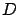
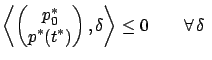
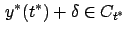

Next: 4.2.8 Adjoint equation
Up: 4.2 Proof of the
Previous: 4.2.6 Key topological lemma
Contents
Index
4.2.7 Separating hyperplane
A standard result in convex
analysis known as
the Separating Hyperplane Theorem (see, e.g., [Ber99, Proposition B.13] or [BV04, Section 2.5.1]) says that if  and
and

are two nonempty disjoint convex sets then there exists a hyperplane that
separates them; by this we mean that
is contained in one of the two closed half-spaces created by the hyperplane
and
is contained in
the other.
The ray  is a convex set, and from the convexity of the terminal cone
is a convex set, and from the convexity of the terminal cone  it is easy to see that its interior is convex as well. Lemma 4.1 guarantees that
does not intersect the interior of
. Therefore, we can apply the Separating Hyperplane Theorem to conclude the existence of a hyperplane separating
from the interior of
, and hence from
itself.4.3Obviously, this separating hyperplane must pass through the point
it is easy to see that its interior is convex as well. Lemma 4.1 guarantees that
does not intersect the interior of
. Therefore, we can apply the Separating Hyperplane Theorem to conclude the existence of a hyperplane separating
from the interior of
, and hence from
itself.4.3Obviously, this separating hyperplane must pass through the point  which is a common point of
and
. Such a hyperplane need not be unique.
The normal to the hyperplane is a nonzero vector in
which is a common point of
and
. Such a hyperplane need not be unique.
The normal to the hyperplane is a nonzero vector in
 (it is defined up to a constant multiple once we fix the hyperplane). Let us denote this normal vector by
(it is defined up to a constant multiple once we fix the hyperplane). Let us denote this normal vector by
 |
(4.28) |
where
 and
and
 are, by definition, its
are, by definition, its  -component and
-component and  -component, respectively. Then the equation
of the hyperplane is
-component, respectively. Then the equation
of the hyperplane is
and the separation property is formally written as
 such that  |
(4.29) |
and
 |
(4.30) |
where  is the vector (4.26) which generates the ray
.
Note that if we were to flip the direction of the normal vector (4.28), the inequality signs in (4.29)
and (4.30) would be reversed; the present choice is simply a matter of sign convention (cf. Section 3.4.4).
For an illustration, see Figure 4.11 in which the
shaded object represents the separating hyperplane.
is the vector (4.26) which generates the ray
.
Note that if we were to flip the direction of the normal vector (4.28), the inequality signs in (4.29)
and (4.30) would be reversed; the present choice is simply a matter of sign convention (cf. Section 3.4.4).
For an illustration, see Figure 4.11 in which the
shaded object represents the separating hyperplane.
Figure:
A separating hyperplane for the Basic Fixed-Endpoint Control Problem
|
|
In view of the definition (4.26) of
, the
inequality (4.30) simply says that
 , as
required by the statement of the maximum principle. This will be
the only use of (4.30). The normal
vector (4.28) will serve as the terminal condition
for the adjoint system, to be defined next.
, as
required by the statement of the maximum principle. This will be
the only use of (4.30). The normal
vector (4.28) will serve as the terminal condition
for the adjoint system, to be defined next.
Next: 4.2.8 Adjoint equation
Up: 4.2 Proof of the
Previous: 4.2.6 Key topological lemma
Contents
Index
Daniel
2010-12-20